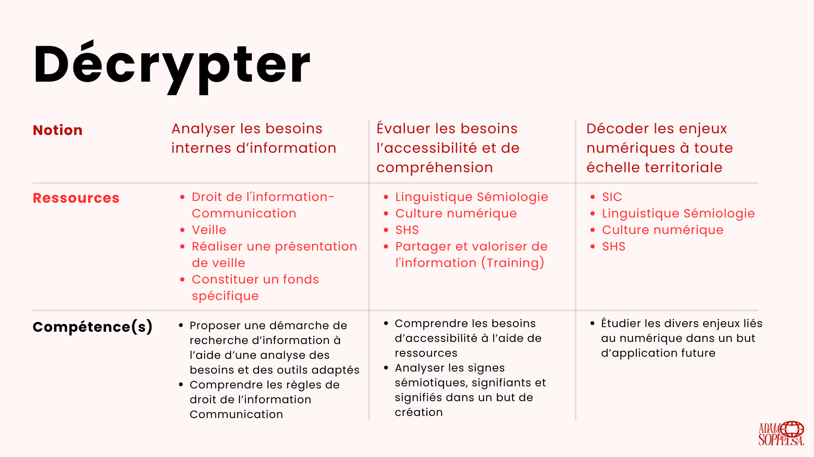
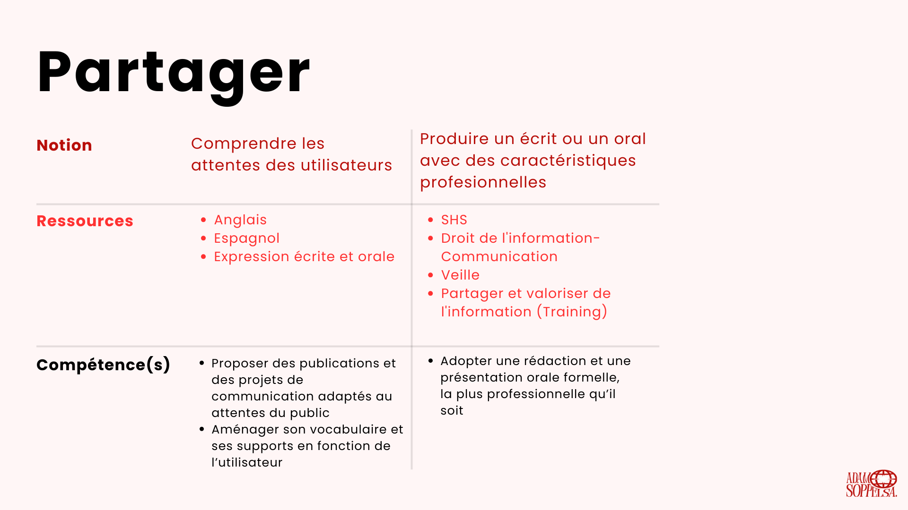
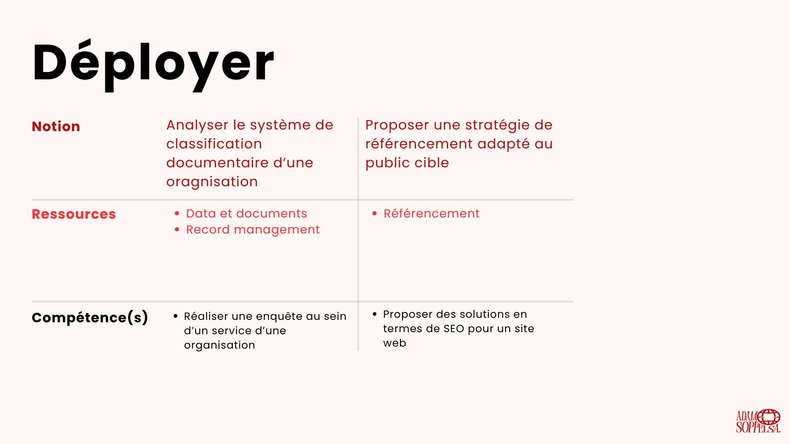
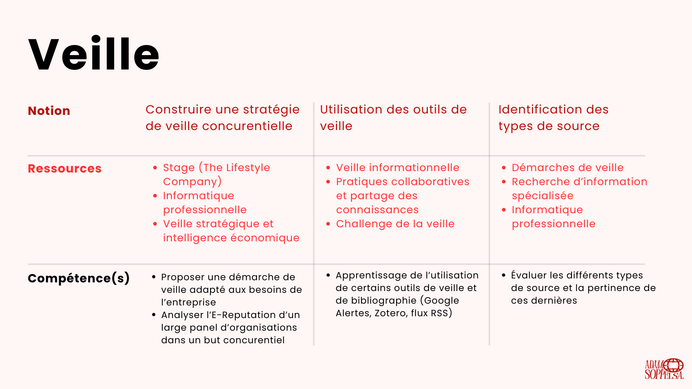
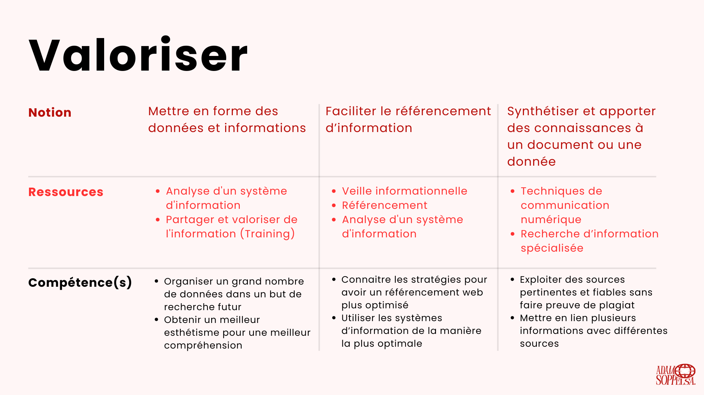

Portfolio
Pour la fin d'année, les professeurs nous ont demandé un portfolio entièrement codé en HTML/CSS (celui sur lequel vous êtes) afin de montrer l'ensemble de nos capacités à nos futurs écoles et employeurs.
Pour ma part, je suis parti sur un site dans les tons rouges. La direction artistique est très sobre, ce qui permet d’avoir un aspect élégant du site, sans qu’il soit surchargé. Le logo principal utilise la police "PERANDORY CONDENSED". Pour le corp du texte, j’ai utilisé la police Poppins (police actuelle). Pour les titres et les sous-titres, j'ai simplement joué sur le style (bold, italic, etc.) et sur la taille du texte.
Dans le header, il y a un menu hamburger, le logo et la possibilité de choisir entre le français et l’anglais, ce qui est un réel atout. Cela permet d’avoir un site qui soit international.
Dans le footer, on retrouve la date, la licence et ma page Linkedin (sous forme du logo de l’application).
Sur le site, il y a plusieurs sections :
- “Accueil” : Un léger texte de présentation et une photo pour présenter mes objectifs académiques.
- “Travaux” : Plusieurs de mes projets les mieux réussis sur l’ensemble de mes trois premières années d’études supérieures.
- “À propos de moi” : Un texte accompagné de mon Curriculum Vitae, ce qui permet de donner plus de détails sur mes ambitions.
- “Contact” : Pour tout questionnement ou demande, un formulaire est disponible.
Ce travail m’a permis d'accroître mes compétences en HTML/CSS, que ce soit sur le plan technique, mais aussi sur le plan esthétique. J’ai aussi utilisé du Javascript, ce qui n’était pas obligatoire dans la consigne initiale, mais qui était nécessaire pour le menu hamburger ou le changement de photo sur la page “Travaux”.
Visualisez ou téléchargez le PDF complet en cliquant dessus.
    